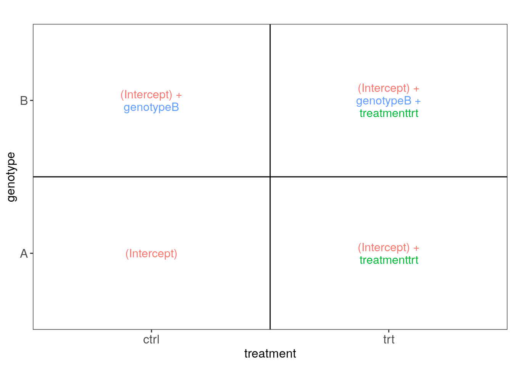

5 Modelos estadísticos
- Revisión de regresión lineal https://lcolladotor.github.io/bioc_team_ds/helping-others.html#linear-regression-example
- Con R, usamos mucho la función
model.matrix()y la sintáxis de fórmulaY ~ X1 + X2tal como en el siguiente ejemplo.
## (Intercept) log(Height) log(Girth)
## 1 1 4.248495 2.116256
## 2 1 4.174387 2.151762
## 3 1 4.143135 2.174752
## 4 1 4.276666 2.351375
## 5 1 4.394449 2.370244
## 6 1 4.418841 2.379546
## 7 1 4.189655 2.397895
## 8 1 4.317488 2.397895
## 9 1 4.382027 2.406945
## 10 1 4.317488 2.415914
## 11 1 4.369448 2.424803
## 12 1 4.330733 2.433613
## 13 1 4.330733 2.433613
## 14 1 4.234107 2.459589
## 15 1 4.317488 2.484907
## 16 1 4.304065 2.557227
## 17 1 4.442651 2.557227
## 18 1 4.454347 2.587764
## 19 1 4.262680 2.617396
## 20 1 4.158883 2.624669
## 21 1 4.356709 2.639057
## 22 1 4.382027 2.653242
## 23 1 4.304065 2.674149
## 24 1 4.276666 2.772589
## 25 1 4.343805 2.791165
## 26 1 4.394449 2.850707
## 27 1 4.406719 2.862201
## 28 1 4.382027 2.884801
## 29 1 4.382027 2.890372
## 30 1 4.382027 2.890372
## 31 1 4.465908 3.025291
## attr(,"assign")
## [1] 0 1 2## [1] "(Intercept)" "log(Height)" "log(Girth)"- ¿Cómo interpretamos los nombres de las columnas de
mat?
##
## Call:
## lm(formula = log(Volume) ~ log(Height) + log(Girth), data = trees)
##
## Residuals:
## Min 1Q Median 3Q Max
## -0.168561 -0.048488 0.002431 0.063637 0.129223
##
## Coefficients:
## Estimate Std. Error t value Pr(>|t|)
## (Intercept) -6.63162 0.79979 -8.292 5.06e-09 ***
## log(Height) 1.11712 0.20444 5.464 7.81e-06 ***
## log(Girth) 1.98265 0.07501 26.432 < 2e-16 ***
## ---
## Signif. codes: 0 '***' 0.001 '**' 0.01 '*' 0.05 '.' 0.1 ' ' 1
##
## Residual standard error: 0.08139 on 28 degrees of freedom
## Multiple R-squared: 0.9777, Adjusted R-squared: 0.9761
## F-statistic: 613.2 on 2 and 28 DF, p-value: < 2.2e-165.1 ExploreModelMatrix
- Es un paquete de Bioconductor que nos ayuda a entender los modelos estadísticos que estamos usando gracias a visualizaciones http://www.bioconductor.org/packages/ExploreModelMatrix/
- Revisaremos los ejemplos en http://www.bioconductor.org/packages/release/bioc/vignettes/ExploreModelMatrix/inst/doc/ExploreModelMatrix.html
- Ejemplo número 1:
## Datos de ejemplo
(sampleData <- data.frame(
genotype = rep(c("A", "B"), each = 4),
treatment = rep(c("ctrl", "trt"), 4)
))## genotype treatment
## 1 A ctrl
## 2 A trt
## 3 A ctrl
## 4 A trt
## 5 B ctrl
## 6 B trt
## 7 B ctrl
## 8 B trt## Creemos las imágenes usando ExploreModelMatrix
vd <- ExploreModelMatrix::VisualizeDesign(
sampleData = sampleData,
designFormula = ~ genotype + treatment,
textSizeFitted = 4
)
## Veamos las imágenes
cowplot::plot_grid(plotlist = vd$plotlist)